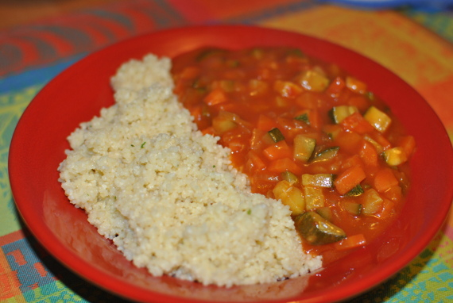

Gemüsesauce mit Couscous

- Zubereitung: ca. 25 Minuten
- Für 4 Personen
Zutaten
- 2 TL Butter
- 2 TL Mehl
- 1 Zwiebel
- 2 Möhren
- 1 Zucchino
- 1 TL Öl
- 1/2 l Gemüsesaft
- 2 EL gehackte Petersilie
- 1/2 l Gemüsebrühe
- 250 g Couscous
Zubereitung
- Die Butter und das Mehl zu einer glatten Masse verarbeiten und in das Gefrierfach stellen.
- Die Zwiebel schälen, Möhren und Zucchino waschen und schälen. Alles in kleine Würfel schneiden.
- Das Öl in einem Topf erhitzen. Zwiebeln, Möhren und Zucchino darin andünsten. Den Gemüsesaft dazugeben und aufkochen lassen. Die Mehlbutter portionsweise in die Sauce rühren. Die Sauce noch 5 Minuten kochen lassen, bis sie gebunden ist. Mit Salz
und Pfeffer abschmecken und mit Petersilie bestreuen.
- Für den Couscous die Gemüsebrühe aufkochen. Den Couscous einrühren und 5 Minuten zum Ausquellen stehen lassen. Vor dem Servieren mit einer Gabel auflockern und mit der Sauce anrichten.